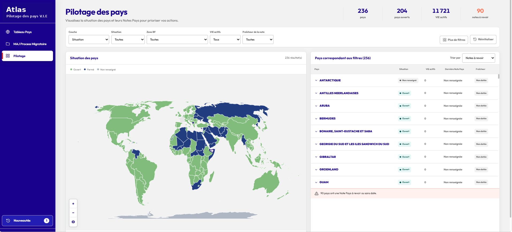
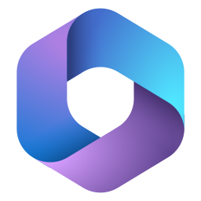
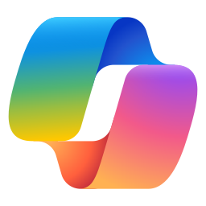
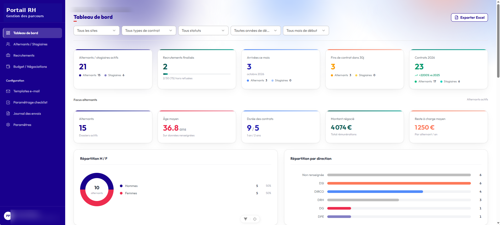
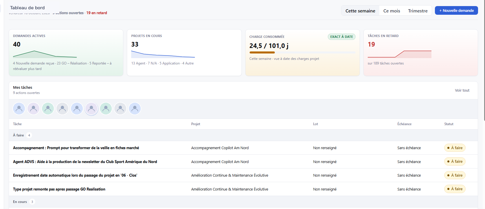
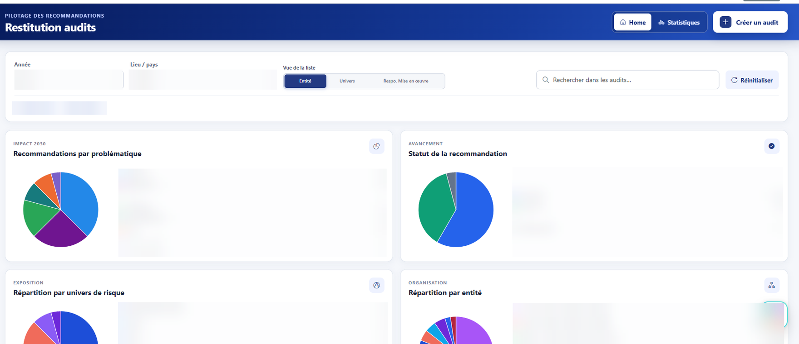

Applications métier
Solutions sur mesure
Remplacer les fichiers et processus dispersés par des applications adaptées aux usages réels des équipes.
Consultant technico-fonctionnel · Microsoft 365
Je cadre, conçois et développe des applications métier intégrées à Microsoft 365 — avec une même exigence de clarté pour les utilisateurs et de maîtrise pour l’IT.

Mes terrains d’intervention

J’interviens là où les besoins métier, la technologie et les usages doivent avancer ensemble — avec la capacité de piloter le projet comme de réaliser la solution.
Solutions sur mesure
Remplacer les fichiers et processus dispersés par des applications adaptées aux usages réels des équipes.
Écosystème Microsoft 365
Structurer les données, connecter les outils et automatiser les tâches avec Power Platform et SharePoint.
Du besoin au produit utile
Transformer une demande métier en solution utilisable, documentée et intégrée au quotidien des utilisateurs.
Les outils que je maîtrise
Automatiser, créer des applications, structurer la donnée et intégrer l’IA : mes outils gravitent autour de Microsoft 365 pour donner vie aux besoins métier.

Microsoft 365 Au cœur de mes solutions
Sélection de réalisations
Centraliser la donnée, simplifier le pilotage et améliorer les usages : quatre réponses sur mesure à des problématiques métier réelles.

Unifier le parcours RH, du recrutement au suivi budgétaire, dans un environnement de travail unique.
Un référentiel partagé pour piloter les informations opérationnelles de 236 pays.

De la demande métier au portefeuille projets et au suivi des tâches dans un seul outil M365.

Un suivi partagé des recommandations, du constat initial jusqu’aux plans d’action à 6 et 12 mois.
Méthode de réalisation
Une démarche structurée, suffisamment rigoureuse pour sécuriser le projet et assez pragmatique pour avancer vite.
Écouter les métiers, formuler le problème, définir le périmètre et les priorités.
Modéliser la donnée, les parcours et les règles ; choisir l’architecture adaptée.
Développer, intégrer M365, tester, valider puis ajuster avec les utilisateurs.
Préparer la mise à disposition, documenter et améliorer dans la durée.
L’IA accélère le développement ; les choix techniques et la qualité du code restent sous ma responsabilité.
Parcours & compétences
Digital Factory · DSI
Business France · Paris
Stage
Riverside County · Californie
Alternance
Business France · Paris
Alternance
My Jungly · Paris
Pour la suite
Vous avez un besoin métier à cadrer, une application à concevoir ou un environnement M365 à faire évoluer ? Parlons-en.